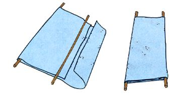
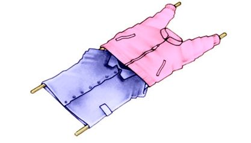
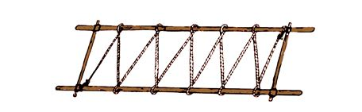

Camillas improvisadas
Las camillas improvisadas pueden usarse cuando no disponemos de otros medios, empleando para su construcción cualquier material que esté a nuestro alcance. En este caso la inventiva y agilidad mental; pero sobre todo la práctica, será lo que te de mejores resultados.
A continuación, tres ejemplos de camillas improvisadas, usando:
Un par de bordones o palos, con una lona, sabana, sobretecho o similar.

Un par de bordones o palos, con unas camisas, abrigos o similares.

Un par de bordones o palos, dos varas y mecate.